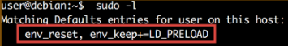

LD_LIBRARY_PATH:
A list of directories in which to search for ELF libraries at execution-time
LD_PRELOAD:
A list of additional, user-specified ELF shared objects to be loaded before all others
These variables are not respected in secure-execution mode
Secure-execution mode is activated if:
The process's real and effect user IDs differ, or the real and effective group IDs differ
A process with a non-root user ID executed a binary that conferred permitted or effective capabilities
A Linux Security Module turned the mode on
